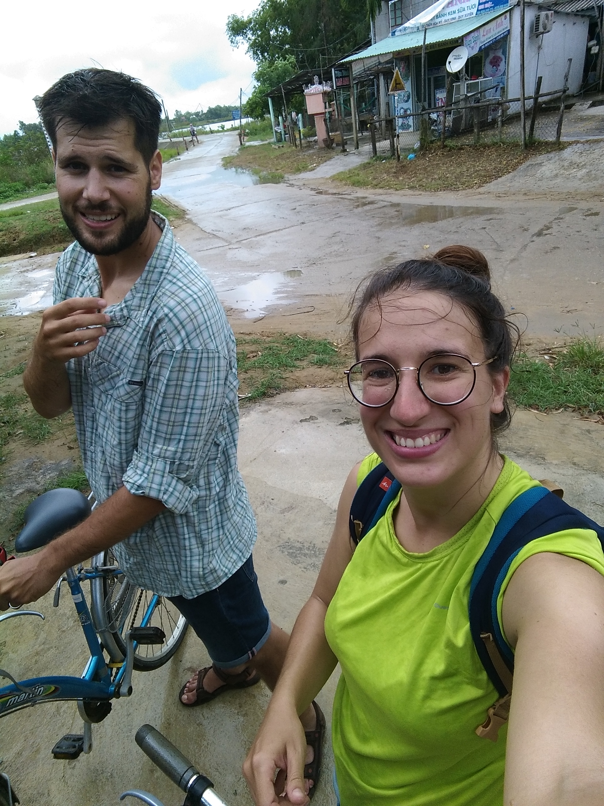
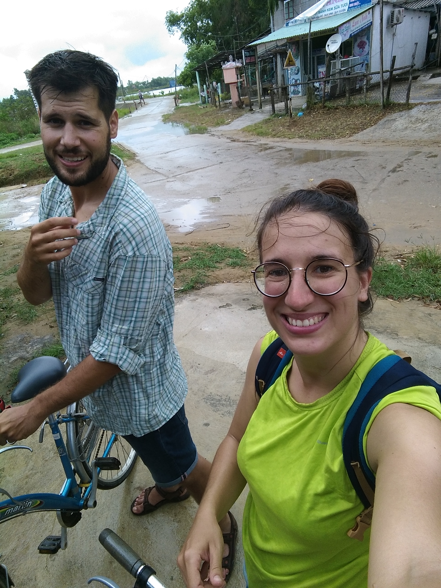
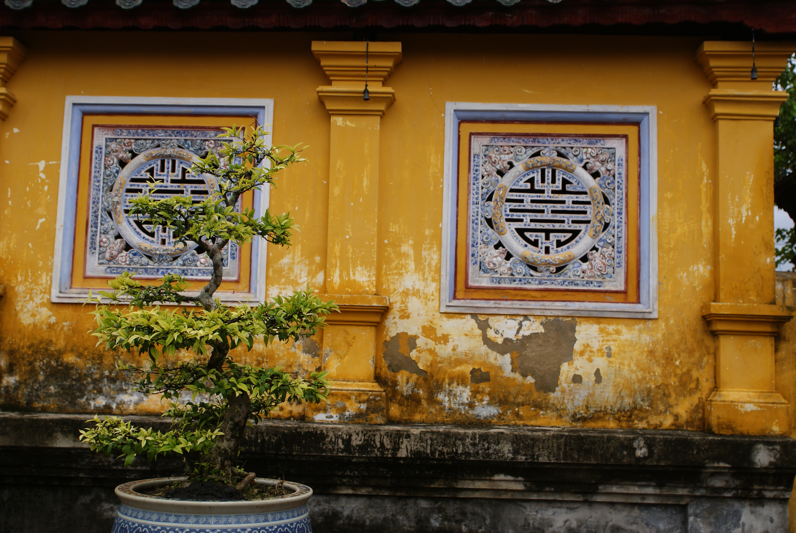
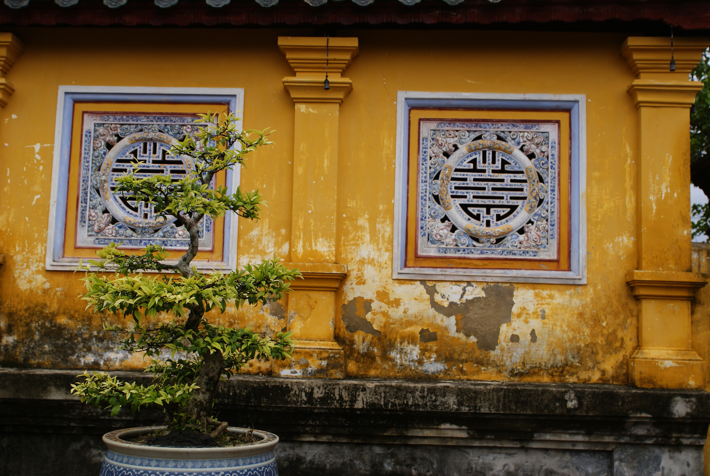

Hoi An, Hué et Hanoï
Le retour à la ville
Hoi An
Nous voici arrivés à Hoï An. A peine le temps de dire au revoir à Hoan (Hoan à Hoï An, le calvaire pour les langues qui fourchent comme la mienne) et à nos fidèles destriers. Et oui, c'est un homme préssé, malgré son air de vieux sage chinois. Nous voilà surtout de nouveau livrés à nous même, libres et responsables de nos actions (on s'est un peu laissés paterner pendant 6 jours il faut dire), et la première réaction qu'on a c'est "mon dieu tout ces touristes !". Le choc est là, après avoir vu l'envers du décor, la campagne et les locaux. Ici à Hoï An, ville hautement prisée des guides de voyages, on est litteralement submergés par nos congénères. Au point de remonter une rue sans apercevoir un seul visage vietnamien. Amers relents d'Ubud pour ma part. On se la joue donc calme le soir, on va voir cette fameuse vieille ville toute illuminée de lanternes et y'a pas à dire, ça te pose une ambiance toutes ces lumières au bord de la rivière. Les guides ne mentent quand même pas. Après, fatalement, c'est l'alpagage de touristes à tout va, du selfie qui va bien sur ce pont où l'on bouchonne, et la gamme de restaurant nous change bien de ce qu'on a connu depuis presque 1 semaine. Mais ne soyons pas ronchon, Maïlys nous a quand même dégotté un petit resto de rue un peu à l'écart, bon marché, ce qui nous permet une adaptation en douceur, tandis que l'on prend le rythme de la ville. Un dernier petit tour ensuite sur l'île, très animée le soir, et nous rentrons. Il nous faut reprendre notre souffle.
Du coup, les autres jours qui suivent, on préfère s'excentrer un peu, pour éviter se sentiment d'étouffement avec toute cette foule. Une journée vélo tranquille sur l'île de Cam Kim et ses environs, où on expérimente l'averse vietnamienne digne de ce nom, une première pour nous. Mais le reste du parcours est calme et magnifique, on ne regrettera pas ce choix.
Le lendemain, après quelques hésitations, on décide de sortir encore une fois de la ville pour les "Marble Mountains". On partait sans trop y croire, incapable de s'enthousiasmer d'Hoï An malheureusement, et on arrive dans un coin bien touristique quand même. Moins que la ville, mais quand même. Alors on grimpe, tant qu'on y est, et c'est là qu'on se fait surprendre par ce que c'est véritablement, la "Marble Mountain". Oubliez le marbre, on s'en fou, c'est un champignon rocailleux conséquent, comportant quelques impressionnantes caves ornementées de statues de Bouddha de toutes sortes, généralement très grandes. Grandiose ! On en prend vraiment plein les yeux. Mention aussi pour la cave de l'enfer avec deux chemins, un descendant pour les enfer, l'autre montant pour le paradis, et chacun illustré selon les croyances bouddhistes. Je préfère vous avertir, leur enfer n'a rien à envier au notre question sévices et tortures... faut pas déconner même chez les bouddhistes !
Hué
On se rend ensuite à Hué pour aller voir cette fameuse cité impériale qui fait sa renommée. Malheureusement largement détruite pendant la guerre contre les américains, les vietnamiens ont entrepris d'impressionants efforts de rénovation. La cité est en effet époustouflante par sa taille et on n'ose imaginer avec tous les batiments debouts ce que ça pourrait donner. On se perd malheureusment dans une discussion sans fin avec Maïlys et passe assez rapidement sur certaine explication. Comme souvent au ici, la muséographie est assez rudimentaire, avec beaucoup de texte, il est donc facile de se déconcentrer. Toujours est-il que les jardins et autres pavillons sont très beaux et on en apprend tout de même un peu sur l'histoire du pays.
Le lendemain on s'embarque en scooter pour aller voir des tombes d'empereurs, très impressionantes aussi, avec chacunes leurs spécificités. L'une d'un style plus traditionnel, plus empreint de l'influence chinoise, l'autre plus originale en béton armé mais qu'on apprécie tout autant. Et enfin, le clos du spectacle, on passe par un parc aquatique abandonné, qui a très peu vécu, pour une vision post-apocalyptique assez plaisante, malgré une galère de clé de scooter perdue (qu'on finira par retrouver je vous rassure). On a failli passer à côté de l'expérience quand un "garde" nous a demandé de partir puisque le site n'est plus sécurisé, les batiments étant à l'abandon. C'est dangereux. Soit, l'argument se tient. Mais apparemment, avec quelques dongs en poche, le discours change, on peut y aller 40min, sans rien escalader. Tiens donc.
Hanoï
Ensuite, départ pour Hanoï en bus de nuit. 12h de trajet, on appréhende un peu, jusqu'au moment où Maïlys se sent vraiment malade. Aïe catastrophe ! Va-t-on pouvoir faire le trajet ? Malgré une crainte certaine, on se lance accompagnés de quelques cachetons, et finalement le tout se passera bien. Mais autant dire que dans un bus de nuit, on ne dors jamais vraiment. Et encore moins quand on est pas vraiment dans les standards vietnamiens de taille. On arrive ainsi à Hanoï et débarquons chez une gentille dame qui tient une chambre d'hôte et nous permet de dormir la matinée dans un lit d'appoint, en attendant notre vrai chambre. Alléluïa, sauvés. On peut se reposer un peu. Du coup décollage difficile en milieu d'après-midi pour la fameuse vieille ville, où nous flânons encore bien fatigués. On passe par hasard par le centre français qui présente une plaisante expo photo et déjà l'effervescence le soir venu dans les petites rues tortueuses et autour du lac nous plaît bien. On sent la vie fourmillante de la capitale vietnamienne. Des stands de partout, des trottoirs utilisés à tout sauf pour les piétons, une circulation infernale (voire dangereuse), on est bien à Hanoï. Malheureusement le retour est précipité, une migraine a raison de mon cerveau en manque de sommeil.
Le lendemain on retourne là où on a commencé, on doit régler quelques broutilles pour la suite et on en profite pour faire (au pas de course) le musée de la femme vietnamienne, hyper intéressant. On y trouve des portraits de femmes contemporaines, une salle sur les us-et-coutumes autour du mariage et de la maternité (une partie des minorités ethniques ici sont matriarcales), des héroïnes de guerre, etc. On regrette de ne pas y avoir consacré plus de temps. On fini notre séjour dans la capitale par une petit spectacle de marionnette sur l'eau, tradition née dans les champs de riz lors d'inondations, que l'on trouve très sympathique. Une des musicienne solliste avait un instrument de musique qu'on est pas arrivé à décrypter avec Maïlys, mais qui rendait un son très joli et différent.
Le lendemain, la fameuse, la célèbre, la tant attendue baie d'Halong nous attend.
 



 



 <\div>
<\div>